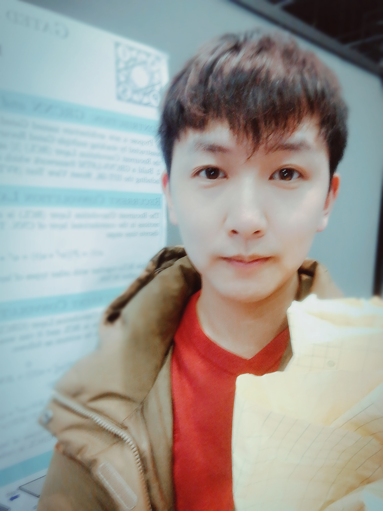

Biography
I'm a Computer Vision Researcher in Lenovo AI Lab. I also worked with Prof. Xiaolin Hu at Tsinghua University. My current research interests are deep learning, machine learning and computer vision. I also have little research experience in recommendation system during my master's program.
I received my M.S. in Computer Technology and my B.E. in Telecommunication Engineering with Management from Beijing University of Posts and Telecommunications.
I am looking for PhD vacancy in 2019. If you are interested in me, please do not hesitate to contact me
Experiences
- Computer Vision Researcher
Artificial Intelligence Laboratory
Lenovo, Beijing
July. 2017- Present - Visiting Student, supervised by Prof. Xiaolin Hu
State Key Laboratory of Intelligent Technology and Systems
Department of Computer Science and Technology
Tsinghua University, Beijing
July. 2015 - June. 2017
Publications
- Jianfeng Wang and Xiaolin Hu. "Gated Recurrent Convolution Neural Network". Under Review, IEEE Trans on Pattern Analysis & Machine Intelligence (TPAMI) 2018.
- Jianfeng Wang and Xiaolin Hu. "Gated Recurrent Convolution Neural Network for OCR". In Proc. of Advances in Neural Information Processing Systems (NIPS), 2017. [paper] [code]
- Haihong E, Jianfeng Wang,Meina Song, Qiang Bi and Yingyi Liu."Incremental Weighted Bipartite Algorithm for Large-scale Recommendation Systems". In Turkish Journal of Electrical Engineering & Computer Science, 2016. [paper]
Awards
- Second-Class scholarship, BUPT (top 8%)
- Third-Class scholarship, BUPT (top 10%)